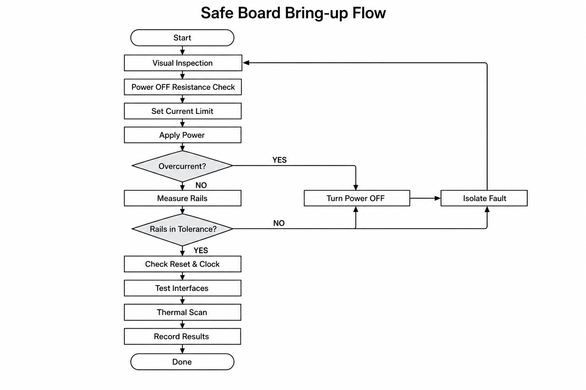

Power-off resistance map
각 rail–ground 저항을 방향과 settling까지 기록하고 golden board/BOM 예상과 비교한다.
CHAPTER 15 · VALIDATION
가설–측정–판정의 반복으로 안전하게 원인을 좁힌다.
한 문장 직관
보드 검증은 무작정 probe를 대는 작업이 아니라, 위험을 제한한 상태에서 한 번에 하나의 가설을 반증하며 evidence를 쌓는 과정이다.
좋은 bring-up은 전원을 켜기 전에 시작한다. schematic, layout, BOM, datasheet, power tree와 expected value table을 준비하고 visual inspection과 resistance check를 한다. 첫 전원은 current limit과 thermal observation으로 damage energy를 제한한다. rail→clock→reset→boot strap→ interface 순으로 dependency를 따라가며 firmware issue와 hardware issue를 분리한다.
판정 가능한 시험 조건
pass/fail 기준은 측정 후 정하지 않는다. nominal, tolerance, operating condition, settling time, measurement bandwidth와 uncertainty를 시험계획에 먼저 쓴다. 예를 들어 “3.3 V rail 정상” 대신 “Vin 12 V, load 0.5 A, 25 °C에서 3.20–3.40 V; 20 MHz BW로 ripple p-p<50 mV”처럼 재현 가능한 조건을 만든다.
현재 관측을 선택하면 가장 정보량이 큰 다음 검사를 보여준다.
각 rail–ground 저항을 방향과 settling까지 기록하고 golden board/BOM 예상과 비교한다.
이상 징후가 보이면 limit을 올리지 않고 전원을 끈 뒤 가설을 좁힌다.

판단 예제 · current limit에 걸린 새 보드
12 V 입력, 예상 idle 120 mA 보드가 0.5 A limit에 즉시 붙는다고 하자. limit을 올리기 전에 전원을 끄고 입력·각 rail의 resistance를 재확인한다. current-limited 1–2 V처럼 손상 위험이 낮은 조건에서 thermal camera 또는 IPA 증발로 hotspot을 찾을 수 있다. shorted TVS, reversed IC, solder bridge, wrong-value pull-down 가설을 하나씩 schematic net와 대조한다. “전원이 약하다”는 가설은 bench supply 단자와 board input 양쪽 전압을 동시에 봐 cable drop과 분리한다.
안전 점검: current limit을 높이는 것은 원인 규명이 아니라 fault에 더 많은 에너지를 주는 행동일 수 있다.
설계에서 검증 가능성 만들기
rail, reset, clock, critical bus와 analog node에 접근 가능한 test point를 둔다. series 0 Ω, shunt, jumper와 isolation option은 subsystem을 분리하게 해 준다. debug UART/JTAG, boot strap 상태, current measurement point, fixture datum과 connector pinout을 문서화한다. design review에 “고장 시 어느 지점에서 무엇을 측정할 것인가”를 포함한다.
기본 순서
오개념 경보
“증상이 사라졌으니 root cause를 찾았다.”
probe를 대거나 손으로 눌러 증상이 사라지면 capacitance, grounding, pressure, temperature가 회로를 바꾼 것일 수 있다. workaround와 root cause를 구분한다. 가설은 “C를 추가하면 좋아진다”가 아니라 “return discontinuity로 생긴 180 MHz resonance가 원인이므로 local damping이 peak와 error rate를 함께 줄인다”처럼 예측 가능한 형태로 쓴다.
셀프 체크
revision과 문서, polarity/orientation, visual defect, rail-to-ground resistance, supply voltage/current limit과 probe 안전 조건이다.
아니다. 먼저 rail, enable, reset/strap, load capacitance, crystal connection과 측정 loading을 dependency 순서로 확인한다.
특정 mechanism을 제안하고, 맞다면 어떤 측정 결과가 바뀔지 예측하며, 반증 가능한 다음 시험을 가진다.